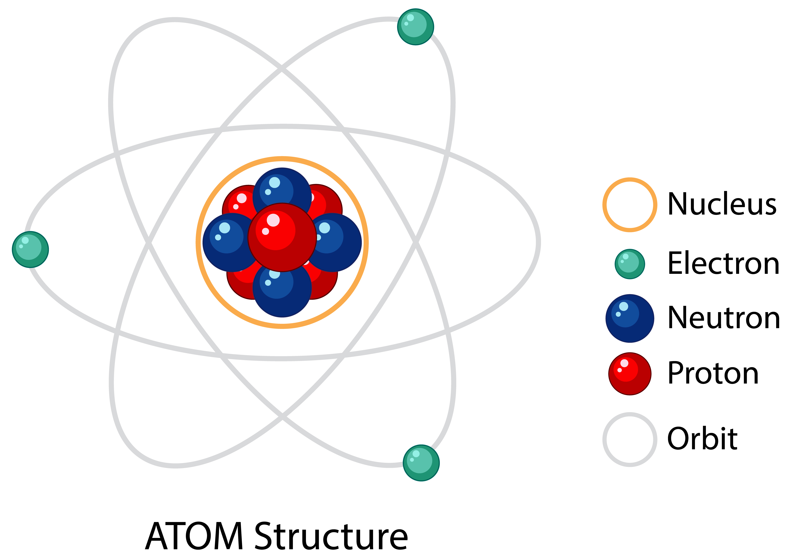

La física atómica es la rama de la física que estudia las propiedades y el comportamiento de los átomos (electrones y núcleos atómicos) así como las interacciones materia-materia y luz-materia en la escala de átomos individuales.

La física atómica es la rama de la física que estudia las propiedades y el comportamiento de los átomos (electrones y núcleos atómicos) así como las interacciones materia-materia y luz-materia en la escala de átomos individuales.1 El estudio de la física atómica incluye la forma en la cual los electrones están organizados alrededor del núcleo y los procesos mediante los cuales este orden puede modificarse, también comprende los iones, así como a los átomos neutros y a cualquier otra partícula que sea considerada parte de los átomos. La física atómica incluye tratamientos tanto clásicos como cuánticos, ya que puede tratar sus problemas desde puntos de vista microscópicos y macroscópicos.
La física atómica y la física nuclear tratan cuestiones distintas, la primera trata con todas las partes del átomo, mientras que la segunda lo hace solo con el núcleo del átomo, siendo este último especial por su complejidad. Se podría decir que la física atómica trata con las fuerzas electromagnéticas del átomo y convierte al núcleo en una partícula puntual, con determinadas propiedades intrínsecas de masa, carga y espín.
La investigación actual en física atómica se centra en actividades tales como el enfriamiento y captura de átomos e iones, lo cual es interesante para eliminar «ruido» en las medidas y evitar imprecisiones a la hora de realizar otros experimentos o medidas (por ejemplo, en los relojes atómicos); aumentar la precisión de las mediciones de constantes físicas fundamentales, lo cual ayuda a validar otras teorías como la relatividad o el modelo estándar; medir los efectos de correlación electrónica en la estructura y dinámica atómica y la medida y comprensión del comportamiento colectivo de los átomos de gases que interactúan débilmente (por ejemplo, en un condensado de Bose-Einstein de pocos átomos).
Átomos aislados
La física atómica considera principalmente a los átomos de forma aislada. Los modelos atómicos consistirán en un solo núcleo que puede estar rodeado por uno o más electrones enlazados. No se ocupa de la formación de moléculas (aunque gran parte de la física es idéntica), ni examina los átomos en estado sólido como materia condensada. Se ocupa de procesos como la ionización y excitación por fotones o colisiones con partículas atómicas.
Si bien modelar átomos de forma aislada puede no parecer realista, si uno considera átomos en un gas o plasma, las escalas de tiempo para las interacciones átomo-átomo son enormes en comparación con los procesos atómicos que generalmente se consideran. Esto significa que los átomos individuales pueden tratarse como si cada uno estuviera aislado, como ocurre en la gran mayoría de las veces. Mediante esta consideración, la física atómica proporciona la teoría subyacente en la física del plasma y la física atmosférica, aunque ambas tratan con un gran número de átomos.
Configuración electrónica
Los electrones forman capas alrededor del núcleo. Estos normalmente están en un estado fundamental, pero pueden ser excitados por la absorción de energía de la luz (fotones), campos magnéticos o la interacción con una partícula en colisión (típicamente iones u otros electrones).
En el modelo de Bohr, se muestra la transición de un electrón con n=3 a la capa n=2, donde se emite un fotón. Un electrón de la capa (n=2) debe haber sido removido previamente por ionización.
Se dice que los electrones que pueblan una capa están en un estado ligado. La energía necesaria para sacar un electrón de su capa (llevándolo al infinito) se llama energía de enlace. Cualquier cantidad de energía absorbida por el electrón en exceso de esta cantidad se convierte en energía cinética de acuerdo con el principio de conservación de la energía. Se dice que el átomo ha sufrido el proceso de ionización.
Si el electrón absorbe una cantidad de energía menor que la energía de enlace, pasará a un estado excitado. Después de cierto tiempo, el electrón en un estado excitado "saltará" (sufrirá una transición) a un estado más bajo. En un átomo neutro, el sistema emitirá un fotón de la diferencia de energía, ya que la energía se conserva.
Si un electrón interno ha absorbido más que la energía de enlace (de modo que el átomo se ioniza), entonces un electrón más externo puede sufrir una transición para llenar el orbital interno. En este caso, se emite un fotón visible o un rayo X característico, o puede tener lugar un fenómeno conocido como efecto Auger, donde la energía liberada se transfiere a otro electrón ligado, haciendo que entre en el continuo. El efecto Auger permite multiplicar la ionización de un átomo con un solo fotón.
Existen reglas de selección bastante estrictas en cuanto a las configuraciones electrónicas que se pueden alcanzar mediante la excitación por luz; sin embargo, no existen tales reglas para los procesos de excitación por colisión.